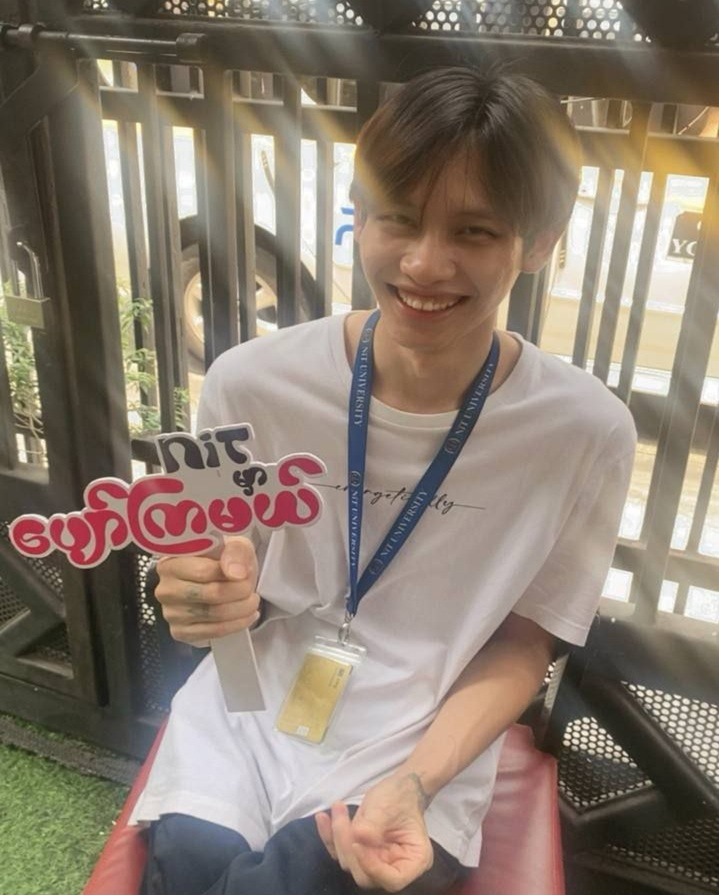

About Me
Hello! I'm Thet Tun Aung — a passionate Java developer who enjoys building creative and functional applications. My focus is on writing clean, efficient, and scalable code that turns ideas into reality.
I graduated from NIT College and earned my IP Certification (A+). I’ve completed Java SE training, gained experience in GUI development with XAMPP/MySQL, and also explored digital marketing and Japanese language (N4 level).
I believe in continuous learning, problem-solving, and teamwork to create meaningful technology that makes people’s lives better.
Skills
Java
GUI Development
XAMPP/MySQL
Web Design
Digital Marketing
Japanese (N4)